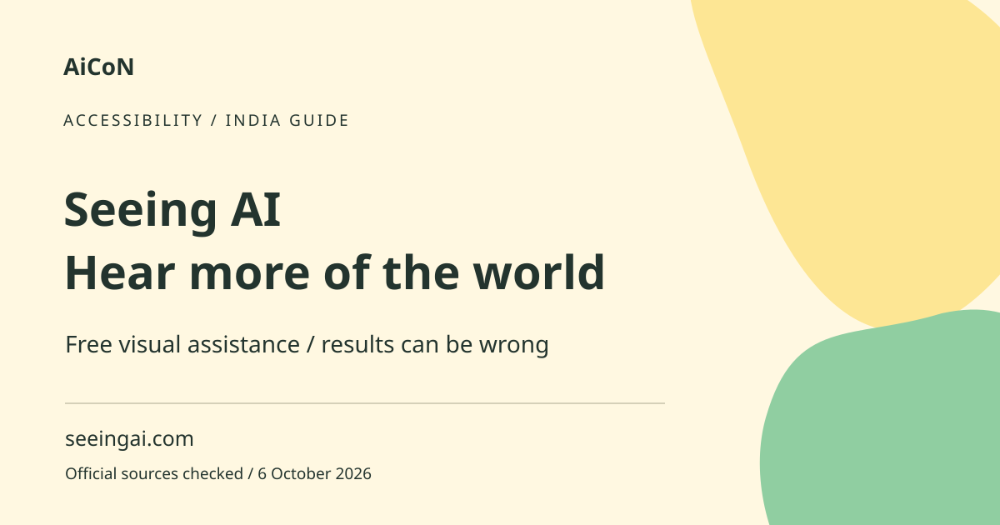

Seeing AI: free visual assistance and safety limits
Seeing AI is a free Microsoft app designed with and for blind and low-vision users. It can read text, describe photos and identify some products. It is an assistive tool, not a reliable replacement for safe navigation or critical verification.

What does Seeing AI do?
The official app description includes reading text and documents, describing photos, identifying products from barcodes or supported accessible QR codes, and other visual-assistance features. Audio cues can help align a document or find a barcode. Product information is available only when the relevant data can be found. A description is generated from the image and can miss or invent details.
Who is it for?
It is designed for blind and low-vision people and can support everyday reading or photo exploration. A family member or accessibility trainer can help with initial setup, with the user's consent. Let the person control permissions and what they share. Do not assume every person wants their surroundings or documents sent to an AI service.
India and Malayalam caveats
The Android listing was checked with the India locale, and an India App Store route is provided below. Device compatibility and store availability can change. We do not claim Malayalam recognition, spoken-language support or reliable identification of Indian currency without individual evidence. Test the language and feature settings on your device with non-critical examples first. Do not use a currency description alone to settle a payment.
How to get started, step by step
- Open seeingai.com and follow the official store link for your phone. Confirm the publisher is Microsoft, not a lookalike app.
- Install the compatible app. Review camera and other requested permissions. Allow only the access needed for the feature you want.
- Use the Read feature on a simple printed page. Follow the audio alignment cues and check a known line with a trusted source.
- Try Describe on a harmless photo. Listen for uncertainty or missing details, and ask follow-up questions if the feature supports them.
- For Products, scan a barcode using the documented audio guidance. Confirm that the returned product matches the actual package.
- Review the app's language and accessibility settings. Try it with your phone's screen reader if you use one.
- Use sharing from another app only for an image or document you have permission to process. Do not upload a private chat or another person's ID casually.
- Keep another way to verify critical information. If the result affects health, money or movement safety, obtain reliable confirmation.
Free access and practical limits
Microsoft describes Seeing AI as free. There is no paid plan required in the checked basic app description. Internet and device costs are separate. Feature availability can differ by operating system, app version and language. This guide does not promise every feature works offline. Test what happens without a connection before relying on it while travelling.
Safety: where not to rely on it alone
AI descriptions can be wrong. Do not use them alone to cross roads, avoid hazards, read a medicine dose, confirm allergens, identify a banknote or judge another person's intentions. A photo may omit an obstacle outside the frame. Read critical labels through another trusted method. The point is to add useful information, not to turn a generated description into a safety guarantee.
Privacy and people descriptions
Images can include faces, home details, documents or location clues. Review the current Microsoft privacy information and app-store data disclosures. If using any people-recognition feature, consider consent and whether saving that person's image is appropriate. Avoid treating an estimated age, expression or other inferred attribute as a fact about them.
Frequently asked questions
Is Seeing AI free?
Microsoft describes the app as free. Your device and network costs remain separate.
Is it on Android and iPhone?
The official site provides platform routes. Check compatibility on your regional store listing.
Can it safely replace a cane or human guide?
No. Do not rely on AI image descriptions for critical navigation.
Does a product result prove allergen safety?
No. Verify the actual package and reliable product information.
Official sources
Checked 6 October 2026. Expanded from an AiCoN short post delivered 6 October 2026. Portal screens and rules can change.